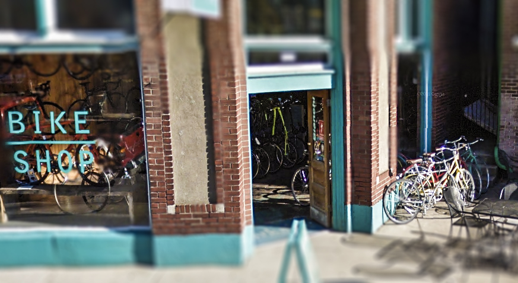
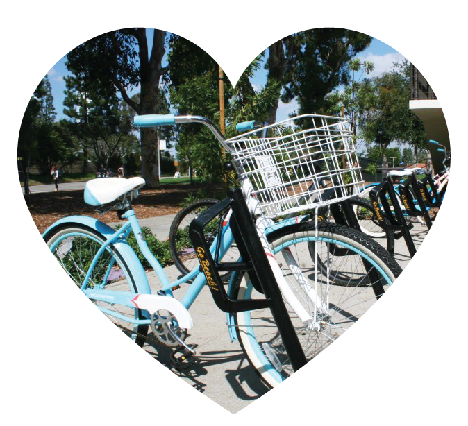

OUR STORY
It's not where you're going, but it's how you get there. We couldn't agree more. We believe your bicycle should be an extension of your life. Your bike should be adventurous, it should be exhilarating... it should be epic. Fixies Bikes are you; they're your mobile canvas.

Fixies Bikes was founded in 2003 by a group of friends who were fed up with the state of bicyles in the city. With shared vision and determination, we set out to introduce high performance, stylish, and affordable bicycles to the planet.
FIXED LOVE AT FIRST SIGHT

So why fixed gear and what's to like about it so much? First, its simply soothing and pleasent. The motions your legs make on a fixed gear feel different - more circular and rhythmical. In that sense it it really not about speed at all, but about being to ride with smooth and regular pedal strokes. Second, riding a fixed gear roadbike helps with technique. Movements feel more elegant, precise.
There is a connectedness to the machine and the ground with a fixed gear that there isn't with other bikes. Nothing clicks; you don't think about shifting. You just pedal. It leave more of the mind free to look at the scenery. You also have more ride control: slowing down your legs slows you down, speeding them up speeds you up; this removal of a layer of abstraction and mechanical complexity results in an experience that feels seductively pure.